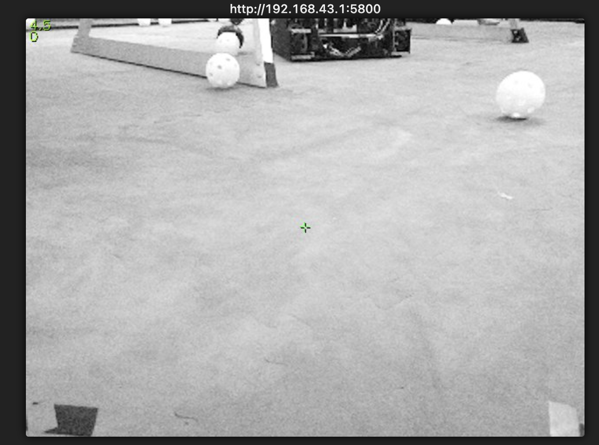
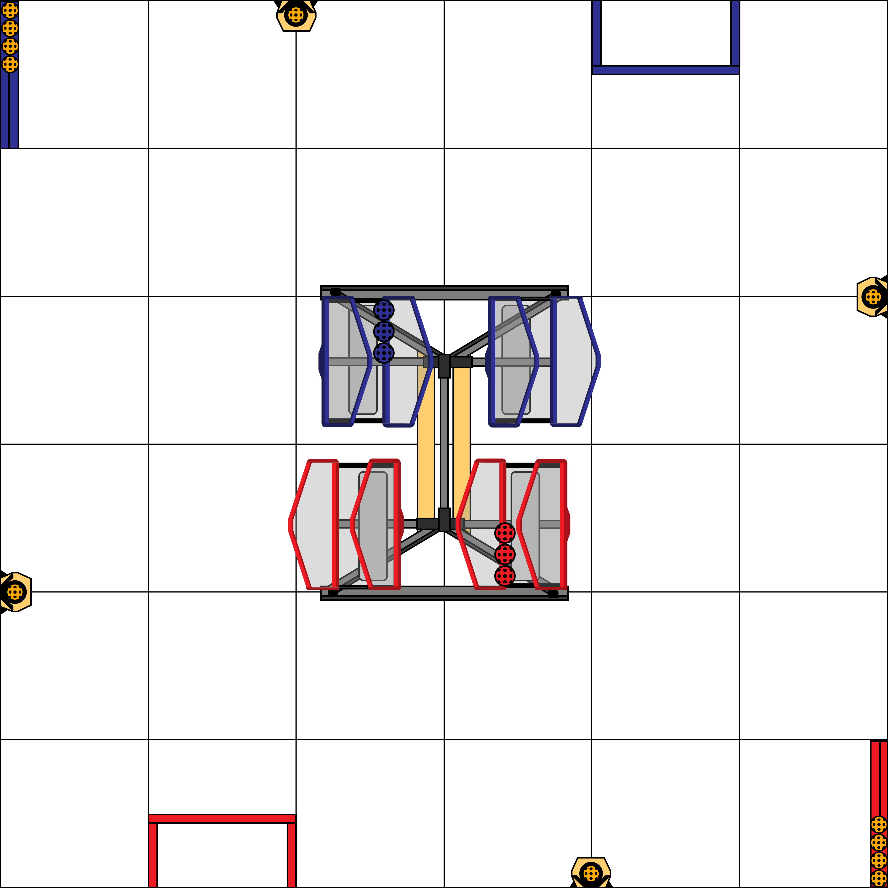

Match up four corners of the field in a camera image and in a top-down map. A perspective transform can then convert any point on the floor from one view to the other.


Multiply a camera pixel (x, y, 1) by this matrix, then divide by the last number, w.
The four corners you click on an image form a quadrilateral. PerspectiveTransform.quadToSquare builds a 3×3
matrix that maps that quadrilateral onto the unit square: corner 1 goes to (0, 0), corner 2 to (1, 0), corner 3 to
(1, 1) and corner 4 to (0, 1). Every drawing is saved in unit-square coordinates. To show it on an image, the page runs
that image's transform backwards (inverseTransform).
Going from one image to the other is just two steps: into the unit square with the first image's transform, then out
with the second image's inverse. quadToQuad combines the two into the single matrix shown above. If a robot
camera sees a game piece on the floor at some pixel, that matrix tells you where it is on the field map.
The catch: this only works for points on the floor plane. Try tracing the top of a tall object in the camera view: it lands in the wrong spot on the top-down map, because a single photo can't tell you how high something is.